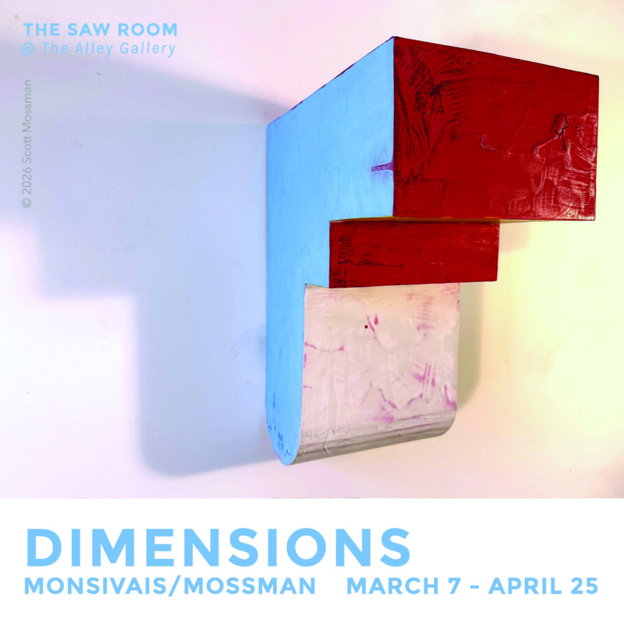

Jesus Monsivais & Scott Mossman: Dimensions
Space and lines influenced by music and architecture, mathematical equations and natural forms give us reason to examine the works of artists Jesus Monsivais & Scott Mossman. The intricate drawings of Monsivais chronicles a journey of a lost friend through a constructed paracosm, accompanied by mythical creatures. Though quite different visually, Mossman’s decidedly post-minimalist sculpture and maximalist painting share an emphasis on relationships – formal and contextual, that strive to expand the experience of space, and at the same time pose questions about the nature of picture-making. These two artists create work that coexists in one reality, yet take us to different dimensions.
Exhibition runs March 7 – April 25, 2026.
Join us for artist receptions Saturday, March 7 and April 4, 5-8pm.